Desarrollo
Versión 1.0
Análisis en 2D
En base a caracteres morfológicos discretos o el análisis univariado de variables escalares, una nueva especie de murciélago del género Molossus -definida genéticamente - no podía ser operativamente diferenciada de otros 3 molóssidos que cohabitan en la región central. A partir de este planteo, en base a criterios de factibilidad, se lograron identificar, seleccionar críticamente, implementar y testear comparativamente una batería de métodos de adquisición y análisis de datos multidimensionales de morfometría craneal basados en medidas lineales (Fig1) y landmarks en imágenes 2D (Fig2).
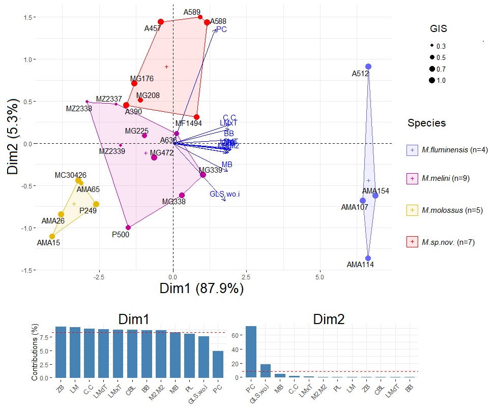
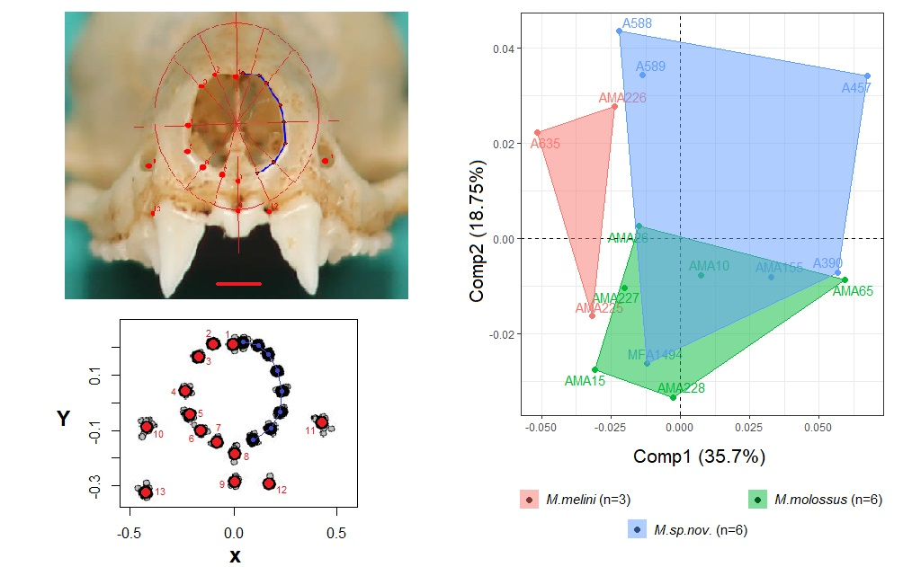
Análisis en 3D
Para llevar a cabo el análisis morfométrico en 3D, se emplearon técnicas de fotogrametría digital con el fin de obtener un modelo tridimensional del cráneo.
La fotogrametría digital consiste en capturar imágenes del objeto desde múltiples ángulos y utilizar software especializado para combinar estas imágenes y reconstruir una representación tridimensional precisa del objeto en cuestión. Este enfoque permite capturar no solo las dimensiones lineales del objeto, sino también su forma y estructura en tres dimensiones, lo que proporciona una visión más completa de la morfología craneal.
El modelo tridimensional obtenido se utilizará posteriormente para realizar análisis morfométricos detallados, permitiendo comparaciones precisas entre la nueva especie de murciélago y otras especies del género Molossus presentes en la región central.
Fotometría digital
Para ajustar el procedimiento, se utilizó inicialmente un modelo de cráneo de murciélago pálido (Antrozous pallidus) disponible gratuitamente en thingiverse.com. El modelo fue escalado para ajustarse al tamaño del cráneo de Molossus.

Se estableció un setup experimental para capturar fotografías de manera automatizada. En primer lugar, se llevaron a cabo pruebas conceptuales utilizando motores paso a paso y una placa de desarrollo Arduino UNO:
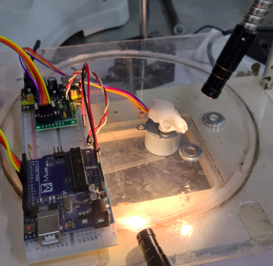
Posteriormente, se exploró la viabilidad de emplear una cámara web USB para el proceso:

Se realizaron pruebas adicionales con una caja de iluminación para mejorar las condiciones de captura:

Con estas pruebas se obtuvieron imágenes de poca calidad que no capturaban todas las características del objeto de prueba.
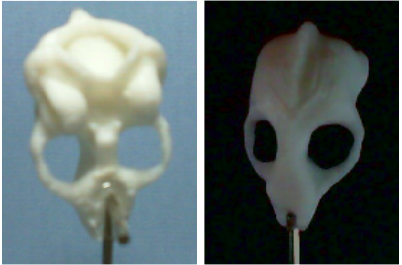
Escaner 3D
Para aumentar la repetibilidad en el escaneo de los cráneos, se decidió adaptar un modelo de escáner 3D utilizando la técnica de fotogrametría de OpenScan en su versión clásica. Este escáner puede ser producido mediante una impresora 3D con tecnología FDM, y los archivos necesarios están disponibles en thingiverse.com.
Para el diseño de las piezas personalizadas se utilizó el software de código abierto FreeCAD.
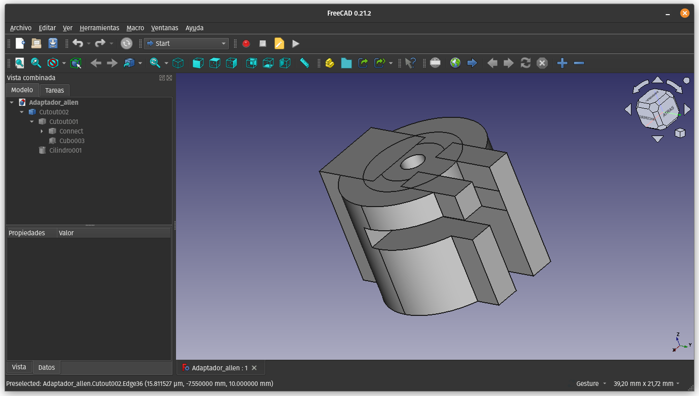
Las piezas fueron impresas en una impresora 3D Hellbot Magna 1v2 usando filamento PLA.

Finalmente, se llevó a cabo el ensamblaje de todas las partes para completar el escáner modificado.

Rutina de Escaneo
Durante la prueba del escáner, se ejecuta una rutina de escaneo diseñada para capturar imágenes tridimensionales con precisión. Esta rutina comienza con un giro completo de 360° de la pieza en intervalos de 15°, deteniéndose en cada paso para la toma de las fotografías correspondientes. Posteriormente, el brazo lateral del escáner se inclina en un ángulo de 60° en ambas direcciones, con incrementos de 20° en cada movimiento. Cada vez que el brazo lateral se inclina, se realiza un giro completo de la pieza en escaneo, asegurando una cobertura exhaustiva del objeto en estudio.

La rutina se puede apreciar en el siguiente gif:

Procesado de Imágenes
Acondicionamiento
Para optimizar y preparar las imágenes capturadas por el escáner 3D, se utilizó el software de manipulación de imágenes GNU Image Manipulation Program (GIMP). Se empleó la extensión Batch Image Manipulation para aplicar procesamiento a múltiples imágenes de manera eficiente.
El proceso de acondicionamiento consta de las siguientes etapas:
-
Recorte:
- Se ajusta el recorte para alcanzar una relación de aspecto estándar de 1:1.
-
Corrección de color:
- Las imágenes son convertidas a escala de grises.
- Se aplica una corrección automática de los niveles de color para mejorar la calidad visual.
-
Renombrado:
- Se realiza un renombrado de las imágenes siguiendo un patrón establecido para una mejor organización y referencia.

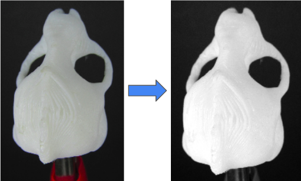
Reconstrucción 3D
La reconstrucción del modelo 3D se llevó a cabo utilizando el software de código abierto Meshroom. Este programa utiliza una técnica conocida como fotogrametría para reconstruir modelos tridimensionales a partir de imágenes 2D.
El proceso comienza cargando las imágenes obtenidas de cada escaneo en el programa Meshroom. A continuación, se ajustan los parámetros del flujo de trabajo, que incluyen configuraciones relacionadas con la detección de características, la correspondencia de puntos entre imágenes y la reconstrucción de la geometría del objeto escaneado.
Meshroom funciona utilizando un enfoque basado en la estructura de grafos para organizar y ejecutar las distintas etapas del proceso de reconstrucción. Cada imagen aporta información sobre la apariencia y la posición relativa del objeto desde diferentes ángulos, lo que permite al programa calcular la estructura tridimensional con precisión.
Es importante destacar que Meshroom es un proyecto de código abierto desarrollado por AliceVision, una comunidad de desarrollo de software que se enfoca en soluciones de visión por computadora y fotogrametría.


El análisis de las características de meshroom se puede observar aquí:

- En Azul --> Feature Extraction
- En Naranja --> Feature Matching
- En Rojo --> Used in Reconstruction
Mejora Condiciones
Fotografías
Se adquirió una cámara fotográfica compacta para mejorar la calidad de las imágenes obtenidas. Se usó una cámara Canon PowerShoot sx510 hs.

Se puede notar la considera mejora de la resolución:
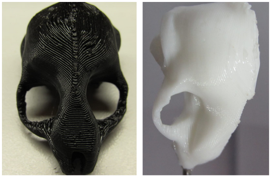
Se agradece a la licenciada Fabiana Meza por el préstamo del equipo fotográfico.
Iluminación
Se mejoraron las condiciones de iluminación con luces LED flexibles que permitieran una iluminación uniforme sobre las muestras, para evitar sombras duras.
También se fabricó una caja de luz para lograr una iluminación controlada.
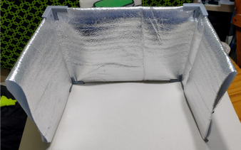
Se pueden observa las pruebas de iluminación a continuación:
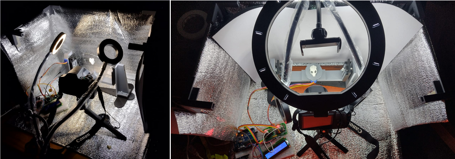
Versión 2.0
Se mejoró el primer diseño, eliminando uno de los brazos del soporte, y se incorporó un nuevo motor NEMA 17 para mejorar los ángulos de movimiento del brazo.
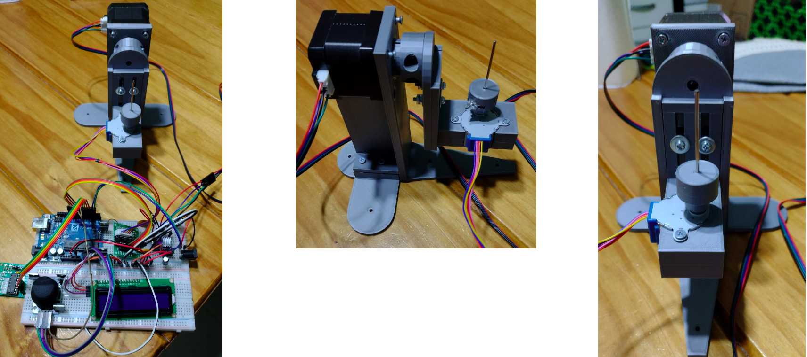
Flujo de Trabajo
Condiciones de Captura
Para tomar las fotografías de las muestras se emplearon los siguientes parámetros de la cámara: - Cantidad de fotos: ≈ 140-150 por muestra - Velocidad Obturador: 1/80 seg - Apertura Focal: F 5.0 - Sensibilidad Sensor: ISO 100
Con el siguiente setup de trabajo:
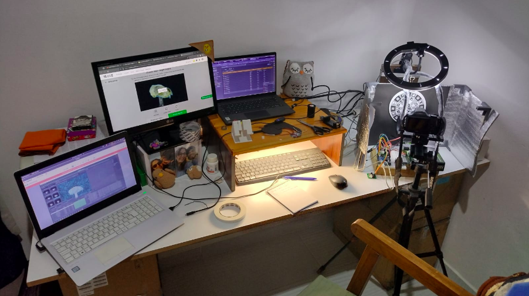
Procesado de Fotos
Primero se proceso el modelo 3D en Meshroom:
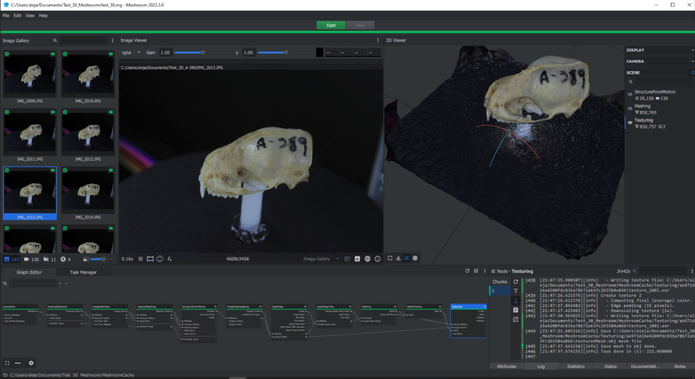
Luego las mallas 3D fueron corregidas en Blender para eliminar el fondo y reparar malformaciones y huecos en las mismas:
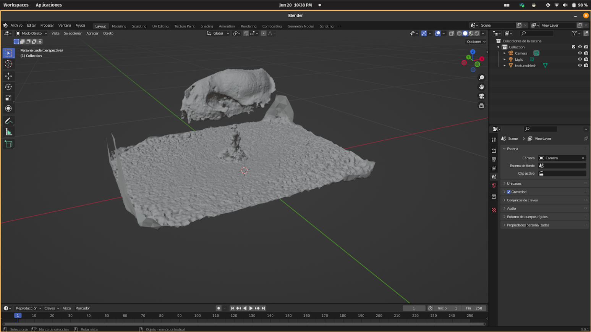
Se muestran las operaciones de limpieza realizadas para obtener el modelo final del cráneo:
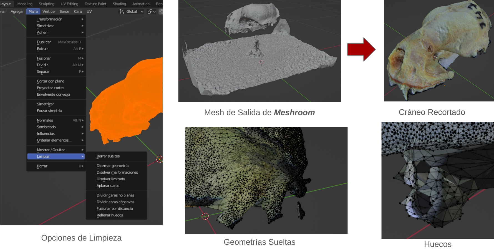
Luego estos pasos fueron replicados para cada muestra.
Código arduino
El siguiente código controla todo el setup de escaneo. Se utilizaron motores paso a paso 28byj-48 con el controlador ULN2003, configurados en Modo de Medio Paso para garantizar un movimiento suave. La información sobre el proceso de escaneo se visualiza en una pantalla LCD 16x2 con controlador I2C, mientras que las opciones del escaneo son ingresadas por el usuario a través de un joystick.
| Escaner-fotometría.ino | |
|---|---|
1 2 3 4 5 6 7 8 9 10 11 12 13 14 15 16 17 18 19 20 21 22 23 24 25 26 27 28 29 30 31 32 33 34 35 36 37 38 39 40 41 42 43 44 45 46 47 48 49 50 51 52 53 54 55 56 57 58 59 60 61 62 63 64 65 66 67 68 69 70 71 72 73 74 75 76 77 78 79 80 81 82 83 84 85 86 87 88 89 90 91 92 93 94 95 96 97 98 99 100 101 102 103 104 105 106 107 108 109 110 111 112 113 114 115 116 117 118 119 120 121 122 123 124 125 126 127 128 129 130 131 132 133 134 135 136 137 138 139 140 141 142 143 144 145 146 147 148 149 150 151 152 153 154 155 156 157 158 159 160 161 162 163 164 165 166 167 168 169 170 171 172 173 174 175 176 177 178 179 180 181 182 183 184 185 186 187 188 189 190 191 192 193 194 | |